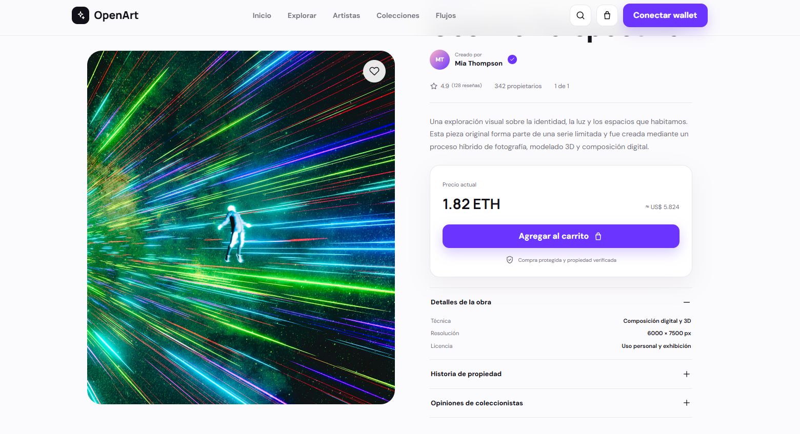
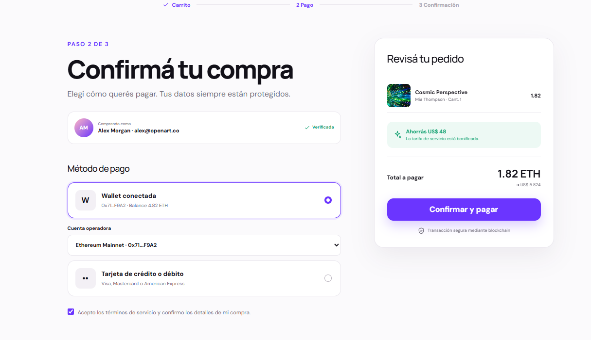

Plataforma de venta de obras de arte digitales. Primer trabajo complejo de la materia.
Figma
Figma AI
Conocé mi perfil
Sobre mí
Diseñando interfaces limpias, intuitivas y centradas en el propósito.
Soy estudiante de Sistemas de Información apasionado por el diseño UX/UI. Mi enfoque se centra en crear experiencias digitales claras y funcionales, priorizando la arquitectura de información y la usabilidad antes que la ornamentación. Apelo al uso reflexivo de la Inteligencia Artificial como herramienta para explorar variantes y optimizar tiempos, manteniendo siempre la mirada crítica y el criterio de diseño en el centro de cada decisión.
UbicaciónConcepción del Uruguay, AR
FormaciónSistemas de Información
Principios de trabajo
Los pilares metodológicos que guían cada flujo y decisión de interfaz.
Claridad ante todo
Una interfaz debe comunicarse sin fricción. Reducir el ruido visual prioriza la comprensión del contenido y la toma de decisiones del usuario.
Proceso antes que estética
Los "esqueletos" y la arquitectura de información son la base. El diseño visual cobra sentido real cuando resuelve flujos concretos y necesidades probadas.
Aprendizaje continuo
Evolución constante integrando herramientas modernas como IA con sentido crítico, experimentando sin perder el rigor metodológico.
Abierto a oportunidades y colaboraciones
¿Trabajamos juntos?
Si estás buscando diseñar o mejorar una experiencia digital con foco en la usabilidad, arquitectura de información y procesos rigurosos, conversemos.
El brief solicitaba una plataforma para la venta de obras de arte digitales con distintos flujos y funciones. Se partió de una estructura previa en Figma proporcionada en la materia, también llamada OpenArt, que no cubría todos los requisitos del brief ni estaba adaptada a los flujos específicos que se pedían. El desafío fue tomar esa base existente, analizarla y reestructurarla para que respondiera a las necesidades del proyecto.
Proceso
1) Análisis del brief y de la estructura previa: se revisó la base proporcionada para identificar qué servía y qué había que modificar o agregar según los requisitos. 2) Arquitectura de información: se redefinieron los "esqueletos" de la aplicación — qué pantallas existían, cómo se conectaban y qué flujos cubrían (descubrimiento, detalle de obra, compra). 3) Prototipado e iteración: se trabajó en Figma (con apoyo de Figma AI) para generar variantes, explorar alternativas y ajustar las pantallas a los flujos pedidos. 4) Validación: se revisaron los flujos para garantizar coherencia y que se cumplieran los requisitos del brief.
Evidencias visuales del proceso y flujos clave
1. Home & Descubrimiento

2. Ficha y Detalle de Obra

3. Flujo de Compra / Checkout
Solución
Se entregó un prototipo navegable en Figma con las pantallas clave de OpenArt (home, catálogo, detalle de obra y flujo de compra), partiendo de la estructura proporcionada pero adaptándola a los flujos y funciones del brief. El diseño priorizó la obra de arte como protagonista, con una interfaz sobria que no compitiera visualmente con las piezas.
Resultado / Aprendizaje
Fue el primer trabajo complejo de la materia. El principal aprendizaje fue entender la importancia de los "esqueletos" (la arquitectura de información) antes de saltar al diseño visual, y aprender a trabajar sobre una base existente sin copiarla, sino adaptándola a los requisitos. También permitió explorar el uso de IA (Figma AI) como herramienta de prototipado, comprendiendo que acelera la exploración pero no reemplaza las decisiones de diseño.